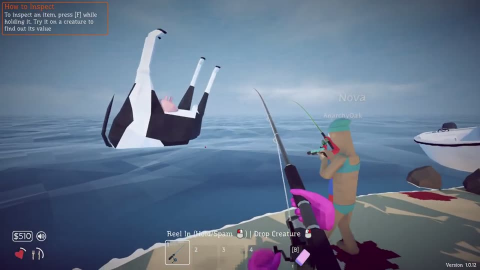
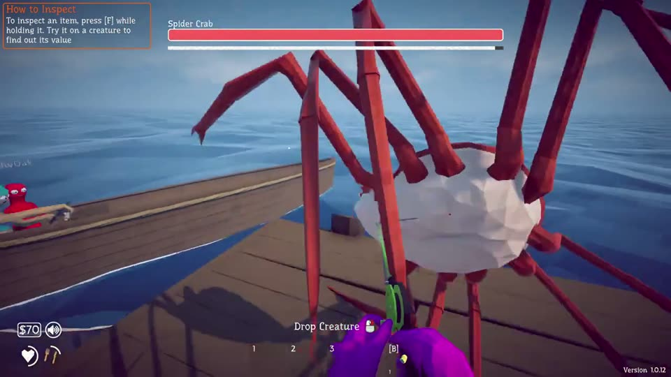
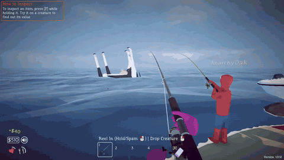
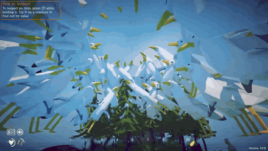
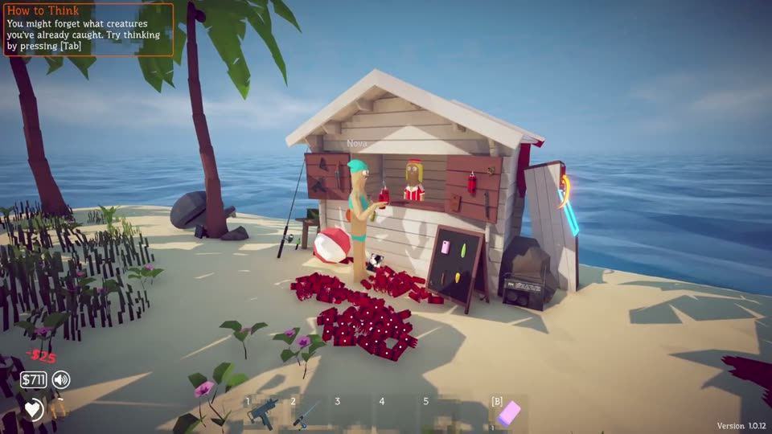
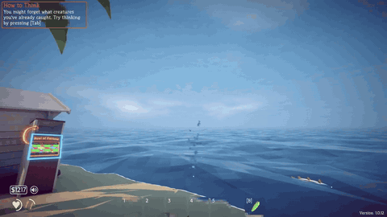

How to Fish review: we caught a whole cow, and I summoned 100 invisible seagulls

How to Fish is a physics-based fishing game from Dazed Games, out on Steam since August 2026 for 1 to 4 players. You crash your boat into a small island while drinking, and the only way home is to learn how to fish: catch fish, sell fish, buy better gear, beat the bosses and move on to the next island. I played it with two friends.
In the real game, hot dogs are bait. A seagull carries your body off every time you die. There's a slot machine you play by feeding it a fancy "drip" catch. We fought a spider crab boss, a giant piranha that brings its kids, and a blue shark that swims through the sand. Then I reeled in a cow. "That is a whole cow." The game files it as a Drip Seahorse. A minute later I caught a horse.


The seagull part is on me. I tried to mod extra seagulls in and they loaded as sound only, so I had about a hundred invisible seagulls squeaking in my ears with "no seagulls on screen." When they did show up, it was as a giant swarm over the trees. My mods also kept teleporting me out to the edge of the map, pushed my money to $999,999 and had me hitting for 1000 damage. Then the game crashed. That crash was my mods, not the game. "If only I hadn't summoned a hundred seagulls."

I took most of the mods out after that, and we beat the giant piranha with two big piles of dynamite and a lot of shooting. I'd left a couple of mods in, though, including one that makes dynamite blow up 10 times bigger. For the last part we stacked dozens of sticks in front of the shop until the game ran like a "2011 PowerPoint," then set it off on the blue shark.


If you want the real version, How to Fish is $7.99 on Steam, with normal dynamite and seagulls you can actually see. The video is below. How to Fish on Steam
More games I broke with mods: Don't Mess With Bober, where I threw a cabin into the sky, Lethal Company as ducks and Helldivers 2 with a rat mod.